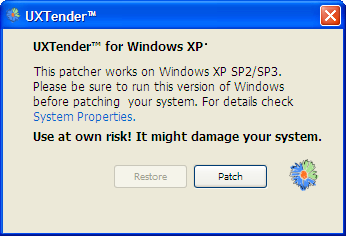
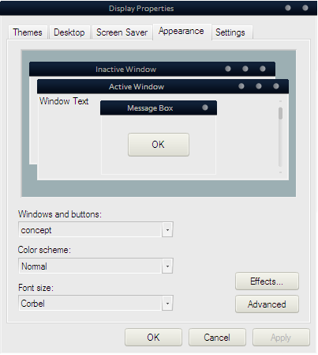

++Customization & Tips++
:: Giving Your Windows XP Desktop A Facelift ::
One of the many downsides of a Windows desktop is the inherent lack of customization, in every sense of the word. Luckily, there exists some ways to "hack" your Windows desktop's aesthetics, at least(it's a lot safer than it sounds) and ultimately create an attractive, but moreover custom-designed desktop look and feel.
This article outlines the initial steps toward achieving a non-vanilla look for your XP desktop(though the methods described here are applicable to other Windows operating systems too, for the most part).
"Unleashing t3h powah": hacking uxtheme.dll
First things first.
One of the more immediate ways of giving your Windows desktop a personalized look and feel is to change the style/theme of it. The downside to this is that Microsoft provides next to no real solutions of their own, but there exists many unofficial ways to stylize your desktop theme.
The first thing you'll need to do is patch a file called uxtheme.dll. When patched, this allows for the user to apply third-party themes to their desktop. Probably the most straight-forward way to do this is to use a convenient little app to automate the process, UxTender. Using it is rather straight-forward, although I can't guarantee it'll work normally/safely on your system, but there's no reason why it shouldn't(note that it's designed for Windows XP SP2/SP3).
After using it, be sure to reboot for the changes to take place.
Putting it all together
Although it may seem like nothing changed(because, for the most part, nothing did, yet anyway), you've just unlocked the true potential of your Windows desktop! Now, on to making this transformation more, shall we say, evident--getting a custom theme.
There's countless places on the web for third-party Windows themes designed for [patched] XP setups, but my personal favorite is Customize.org.
The process of getting the theme "activated" is typically a matter of extracting the downloaded theme archive's contents into:
C:/Windows/Resources/themes/
Making sure the archive extracts in its own directory(.../Resources/[theme-name]), then you simply have to apply the theme by right-clicking the desktop, opening the Display Properties dialog, and changing the appropriate settings in the Appearance tab:
If you don't see the new theme there, you probably have the theme extracted one directory too "deep"(make sure you have files like
"[style].msstyles" and such in the
../Themes/[style-name]/ directory).
And that's pretty much all there is to it!